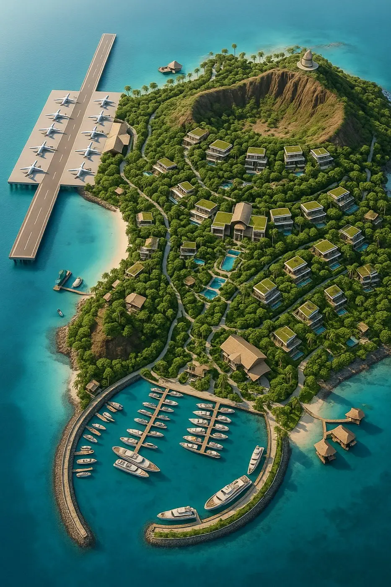
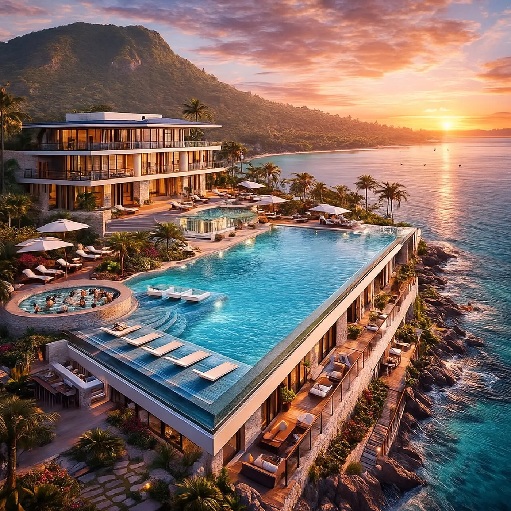
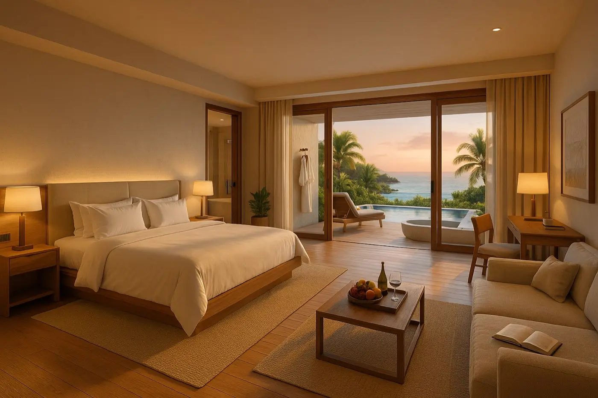
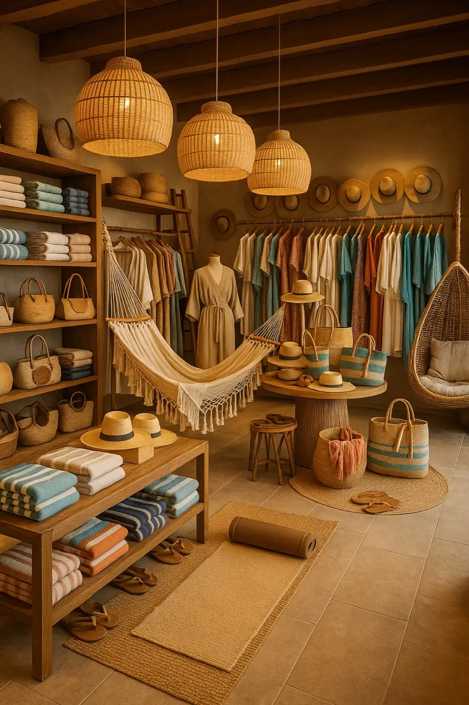
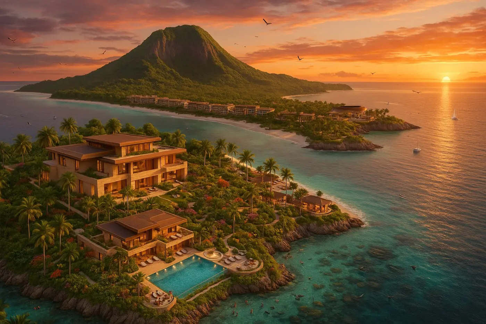

En construcción · trabajando
ISLALa Encantada
Una isla volcánica privada, convertida en el resort virtual donde alguien pensó en absolutamente todo.
3–4 kmde isla volcánica
800habitaciones
80villas de ultra lujo
1,820personas de staff
Cómo vamos
Lo que estamos construyendo





Ya está pensado, pieza por pieza
50especies de flora
70especies de fauna
100experiencias
100platillos
120masajes
200piezas en 3 tiendas